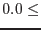
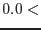

| Parameter | Mand | Type | Default | Constraints |
| eventset | yes | dataset | dummy_default | |
Reference event file used to define the coordinate system for the source and background regions. In general this should be the event list which is to be filtered by the regions.
|
| tempset | yes | dataset | tempset.ds | |
Name of a temporary, internally-accessed dataset to hold the filtered source list. It is only of importance for pcms (or other parallel) calls of region.
|
| srclisttab | yes | table | dummy_default | |
The name (in  dataset name dataset name :table name format) of the FITS table containing the sources. :table name format) of the FITS table containing the sources.
|
| expression | no | string | | |
A selection expression used to filter the source list. The selection expression should adhere to the selectlib
grammar and should contain as arguments only keywords and column names actually present in the source list table.
|
| operationstyle | no | string | single | single|batch|global |
See section 3.1 for a detailed description.
|
| usersrcid | yes | integer | 1 |  usersrcid usersrcid |
If operationstyle=`single', the task looks in this parameter for the row number of the source list (after the list is filtered via expression) for which to construct source and local-background event-extraction regions.
|
| srcidcol | yes | string | dummy_default | |
If operationstyle=`batch', the task looks in this parameter for the name of the column in which to look for a (unique) source id integer. Source and local-background event-extraction regions are constructed for each source in the (expression-filtered) list and stored in separate binary table extensions in two datasets, one dataset for the source regions, the other for the local-background regions. The names of the extensions are constructed using the unique id integers (see section 7). This parameter is then written in the header attribute SRCIDCOL in the output source and background region files.
|
| shrinkconfused | no | bool | yes | |
Whether to shrink extraction regions until they don't overlap. See section 3.5.
|
| radiusstyle | no | string | userfixed | userfixed|enfrac|contour |
This governs the way in which the size and shape of the source extraction region is calculated. See section 3.4 for a detailed description.
|
| fixedradius | no | real | 12.0 | fixedradius |
If radiusstyle=`userfixed', the task looks in this parameter for the radius (in arcseconds) to be used for all source extraction regions.
|
| energyfraction | no | real | 0.9 |  fixedradius fixedradius |
If radiusstyle=`enfrac', the task looks in this parameter for an energy fraction between 0 and 1. This is used to calculate a radius for the source extraction regions via the cal
library call CAL_psfEncircledEnergy.
Note that the actual PSF energy fraction contained within the region circle may (because the cal
returns the PSF in pixellized form) differ slightly from the value specified via the present parameter.
|
| bkgratestyle | no | string | col | user|col|kwdset|image |
If radiusstyle=`contour', the source extraction regions are calculated by a `contour' method, described in section 3.4.1. The task first obtains an analytical model of the PSF, for which contours of equal brightness are elliptical in shape. Thus, given the normalization of the PSF (ie, source brightness) and a brightness contour level equal to the local background times a multiplying constant (provided via the parameter bkgfraction), an elliptical shape can be calculated for the source extraction region. In order to calculate such a contour there must be some way to specify the local background level. bkgratestyle provides four alternatives (however at present only two of these are implemented), each of which requires a different additional parameter. These alternatives are described under the appropriate parameter name.
|
| bkgratecol | no | string | BG_MAP | |
If radiusstyle=`contour' and bkgratestyle=`col', in theory the column name containing the background flux values is read from the present parameter. However this is not yet implemented - `BG_MAP' is hard-wired into the code.
|
| bkgrateuser | no | real | 1.0 | bkgrateuser |
If radiusstyle=`contour' and bkgratestyle=`user', the background flux may be entered here. Note that it should be in a unit compatible with the source brightness. Since source brightness is at present `hard-wired' to come from SCTS column of the source list, this `compatible unit' must at present necessarily be counts/pixel.
|
| bkgfraction | no | real | 1.0 | bkgfraction |
As described in section 3.4.1 and also in the bkgratestyle parameter description, the contour method of obtaining a source region shape requires a flux level to be specified via two values: a value of the local background flux (which can be specified in a number of ways, switched via parameter bkgratestyle), and a number by which this value is to be multiplied (given via the present parameter). Thus the source region is returned as that shape for which the PSF function equals bkgfraction.
|
| nosrcellipse | no | bool | no | |
If radiusstyle=`contour', the shapes of the source extraction regions are in general elliptical. If this is not desired, they may be converted to circles of radii equal to the greater semiaxis of the respective ellipses.
|
| fovbkgannulus | no | bool | no | |
Local-background annuli may be concentric about either the optic axis or the source location (see section 3.6). The present parameter provides the switch for this behaviour.
|
| outunit | no | string | xy | detxy|xy |
Specifies the spatial coordinate system for the output event-extraction regions. DETXY is equivalent to the CAMCOORD2 system described in the cal
task documentation, except that the units are 0.05 arcseconds instead of mm. The standard XMM EPIC event lists contain event coordinates in DETX and DETY columns. The XY system refers to X and Y column values of the standard event lists. These pairs of values give the location of the event on a tangential projection plane and are calculated (using task attcalc) shortly after the event list is created in order to save time when the product images are extracted. (Images in several energy bands are generally extracted but they all share the same projection plane.) The units of the XY system are 0.05 arcseconds, same as DETXY.
Note that this parameter is not case-sensitive.
|
| nobkgellipse | no | bool | no | |
The DETXY and XY coordinate systems are not coplanar. Thus circles in DETXY become transformed to ellipses in XY. As described in section 3.6, it may be desirable to construct local-background annuli as circular annuli in the DETXY system, concentric about the optic axis (OA), because contours of the vignetting function follow (broadly speaking) a similar form. If outunit=`xy', such contours become distorted to ellipses, so normally if fovbkgannulus=`yes' the background annuli are distorted to ellipses in the same way. However in the (possibly unlikely) event that this distortion may not be desired, the present parameter has been provided. If nobkgellipse=`yes', local-background annuli will not be transformed to ellipses in XY but will remain circular. The radius conversion factor is taken from the smaller of the XY-system pixel dimensions expressed in DETXY coordinates.
|
| regionset | no | dataset | src_region.ds | |
The dataset in which source extraction regions are stored.
|
| bkgregionset | no | dataset | bkg_region.ds | |
The dataset in which background (either local or global) extraction regions are stored.
|
| Parameter | Mand | Type | Default | Constraints |